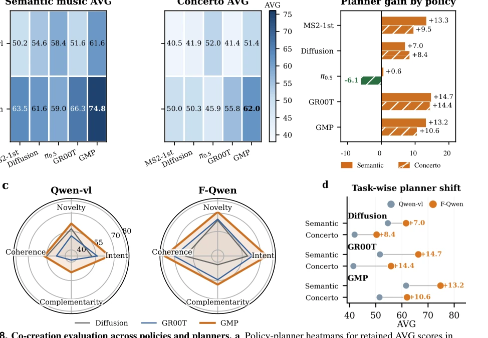
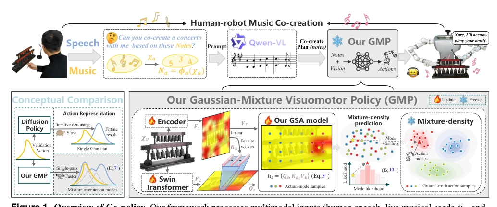
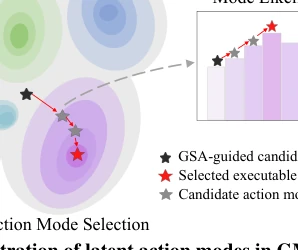
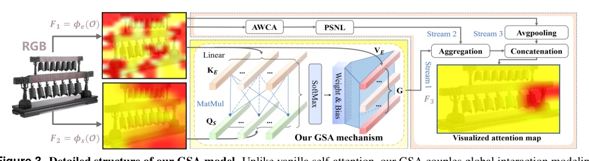
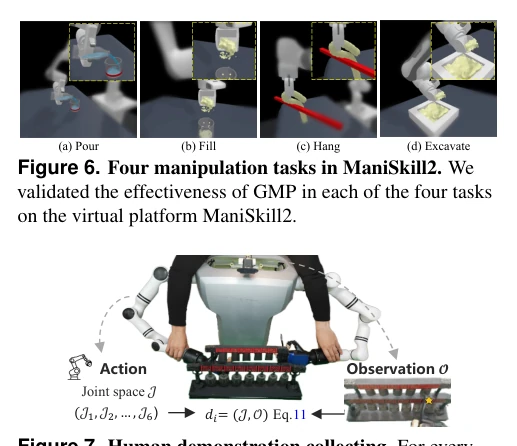
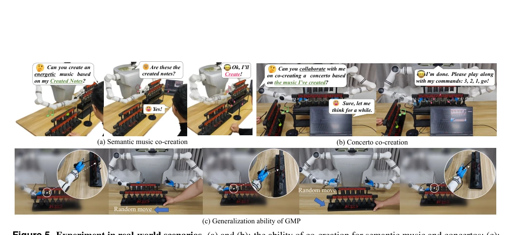

Co-policy: Responsive Human-Robot Co-Creation for Musical Performances
Xuetao Li, Wenke Huang, Mang Ye, Zijian Liu, Jinhua Xie, Jifeng Xuan abspdf
论文点评Review
这篇论文试图把 AI 从屏幕里拽出来敲钟，算是 Embodied AI 在艺术领域的一次硬核尝试。核心卖点是把“创作”拆解成了语义理解、音乐变奏和物理执行三步走，避免了端到端黑盒的不可解释性。GMP 策略用高斯混合模型替代扩散模型，确实解决了实时性问题，这点值得点赞。但所谓的“共创”其实是在严格约束下的“填空”，人类给种子，机器人按规则补全，离真正的即兴创作还有距离。而且实验主要集中在风铃敲击，泛化性存疑。不过，把 VLM 的语义能力和物理策略解耦，确实为具身创作提供了一个可调试的框架，比那些只会复读机式的机器人强多了。这种设计虽然保守，但在物理约束下保证动作可行性是具身智能的关键，至少比那些只会生成无法演奏乐谱的纯文本模型靠谱。
This paper attempts to pull AI out of the screen to ring bells, representing a hardcore attempt of Embodied AI in the art field. The core selling point is decomposing 'creation' into three steps: semantic understanding, musical variation, and physical execution, avoiding the unexplainability of end-to-end black boxes. The GMP strategy replaces Diffusion Models with Gaussian Mixture Models, indeed solving the real-time issue, which deserves praise. However, the so-called 'co-creation' is actually 'filling in the blanks' under strict constraints; humans provide seeds, robots complete according to rules, still far from true improvisation. Moreover, experiments focus mainly on wind chime striking, generalization is questionable. However, decoupling VLM's semantic ability and physical strategy indeed provides a debuggable framework for embodied creation, much better than those parrot-like robots. Although this design is conservative, ensuring action feasibility under physical constraints is key to embodied intelligence, at least more reliable than pure text models that only generate unplayable scores.
Existing generative AI mostly remains at the text or audio level, lacking physical body participation [1, 2, 3]. Embodied music co-creation faces two major challenges: first, how to convert abstract intent into physically executable actions, and second, how to guarantee low-latency interaction. Existing robot music systems often degenerate into playback devices, merely reproducing user-specified notes [1]. Diffusion Policy, while expressive, introduces latency through its iterative denoising process, making it unsuitable for tight human-music interaction [4, 5, 6]. Standard imitation learning tends to collapse to average actions, losing expressiveness. Therefore, a framework is needed that can both understand semantic intent and quickly generate physical actions to achieve true closed-loop co-creation rather than mechanical playback. This requires the system to establish an efficient bridge between semantic understanding and physical execution; otherwise, it cannot meet real-time interaction needs, leading to disconnection in human-machine cooperation.

Figure 11. Discussion-oriented diagnostics. Attention visualization helps inspect whether the visual encoder grounds actions around target bells and contact-adjacent regions. The compliant hand illustrates the soft-contact design used to approximate human chime striking, while the robot-perspective
Co-policy adopts a modular VLA architecture, decomposing the task into three independent stages. First, the pre-reasoning Semantic Anchor Bank is used to fine-tune Qwen-vl (F-Qwen), converting speech, scores, and visual observations into structured co-creation plans to ensure intent alignment. Second, the planning layer generates complementary note plans under constraints of motivation consistency, harmonic validity, novelty, and playability, preventing VLM hallucinations. Finally, the core innovation is the Gaussian-Mixture Visuomotor Policy (GMP). It employs a Guided Self-Attention (GSA) encoder, combining Swin Transformer global features and DenseNet local features, predicting the mixture density distribution of action vectors via a single forward pass. Each Gaussian component represents a potential action mode (e.g., different striking angles), avoiding the iterative denoising of Diffusion Policy and achieving low-latency execution. This design allows retaining the possibility of multiple action modes while maintaining physical feasibility, rather than a single deterministic output, thus balancing speed and diversity.

Figure 1. Overview of Co-policy. Our framework processes multimodal inputs (human speech, live musical seeds χa, and RGB observations) to support embodied human-robot co-creation. The VLM grounds the human’s incomplete creative seed into a structured intent plan; the constrained musical variation mo

Figure 3. Detailed structure of our GSA model. Unlike vanilla self-attention, our GSA couples global interaction modeling with locally salient features across distinct maps: local features (red in F1, processed by encoder φe) denote key regions in the observation, while global features (red in F2, v
Verified in real robot wind chime experiments and ManiSkill2 simulation. 350 real trajectories were collected. Comparison baselines include Diffusion Policy, Behavior Cloning (RH20T/DROID), and ManiSkill2 champion strategy. Evaluation metrics cover expert scores (intent alignment, novelty, coherence) and physical metrics (strike success rate, pitch accuracy, response frequency). Results show Co-policy outperforms Diffusion Policy in co-creation scores (74.8 vs 66.3) and has a higher response frequency (18.6 Hz vs 1.01 Hz). Ablation experiments indicate that GSA and the mixture density head contribute significantly to performance improvement. ManiSkill2 simulation validates the strategy's generalization ability. Although experimental scenarios are limited, it proves that under specific tasks, the decoupled architecture is superior to end-to-end models, providing a baseline for subsequent expansion.

Figure 5. Experiment in real-world scenarios. (a) and (b): the ability of co-creation for semantic music and concertos; (c): we randomly adjust the position of the chime, and the robot successfully strikes the designated bell without disrupting its sound.

Figure 8. Co-creation evaluation across policies and planners. a, Policy-planner heatmaps for retained AVG scores in semantic music co-creation and concerto co-creation. b, Planner-side gain, computed as F-Qwen minus Qwen-vl under the same action policy; orange indicates improvement and green indica
其他图片Other Figures

Figure 7. Human demonstration collecting. For every RGB frame the corresponding action shows how the hand moves from its starting place to the goal spot with the chosen end-effector pose.